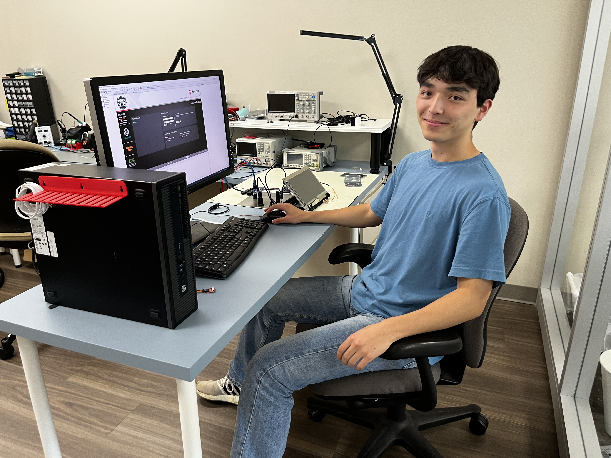
Pression, a biomedical early stage company, was a great place to
work (learn more about Pression
here). My main tasks
revolved around the Wave PRO's embedded systems and software.
Dzineon Gyaltsen '24 and I wrote the majority of the code for the
main display and its interactions with the microcontrollers and the
rest of the system. Our work is in use in clinical trials. I also
completed many different tasks at Pression including designing a few
peripheral components, authoring quality management documents,
supporting the CEO with the pitch deck, and assembling some
prototypes. Adam Salamon and the rest of the team created a great
environment to get work done and have fun while doing it. Adam was
also supportive of Comma, my startup at the time, and I learned a
lot about startups and business at Pression. There are limited
pictures due to a NDA.
Tools, Software, & Machines Used
- Arduino, MPLab IDE, Github, 4DGL (a C-like language)
- Hand Tools
- Power Supply, Microcontrollers, other Electronics
Worked With
-
I primarily worked with Dzineon Gyaltsen '24, but also worked with
many other members of the team including CEO Adam Salamon and
Research Engineer Pablo Huang.
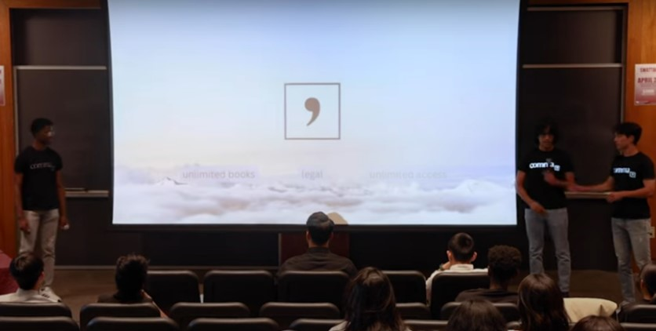
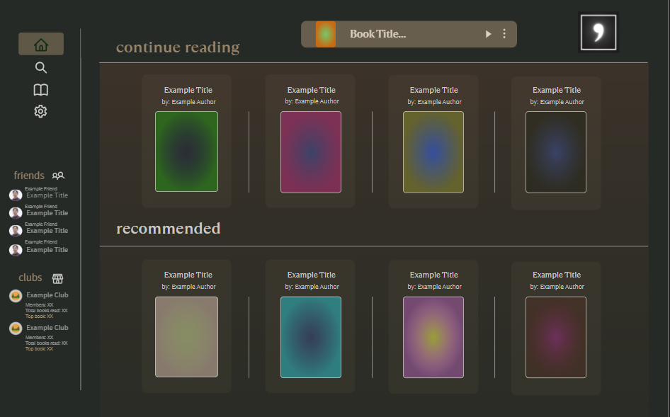
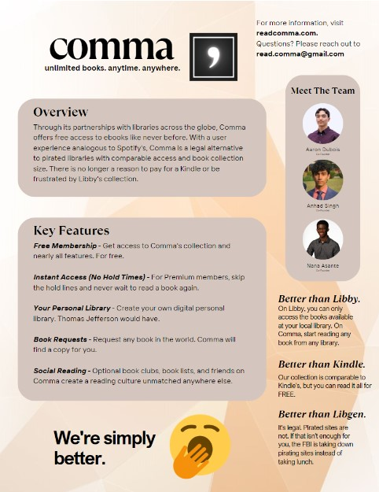
Comma was a project which started with myself, Anhad Singh, and Nana
Asante. We wanted to create the Spotify for books. We received 2nd
place at
SwatTank 2023 (a startup pitch competition), established partnerships with 8 libraries, built a
website, strategized with
the holders of the second largest digital collection in the USA, the
Hathi Trust, and created many other startup materials including a
shared Notion, outreach trackers, customized marketing materials for
different audiences, library agreement documents, mailing lists, a
GitHub repository, time trackers to divide initial equity using the
Slicing Pie method (learn more at slicingpie.com), and much more. I
also developed a
UI (click fit to scale in top right for best experience)
that can be clicked through to get an initial feel for how our
software would have worked. We stopped working on Comma due to
potential legal challenges not dissimilar to Spotify's that we felt
we were ill-positioned to take on.
Worked With
- Anhad Singh '26
- Nana Asante '26
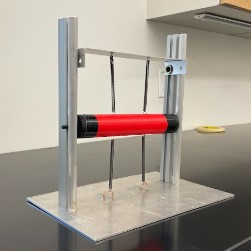
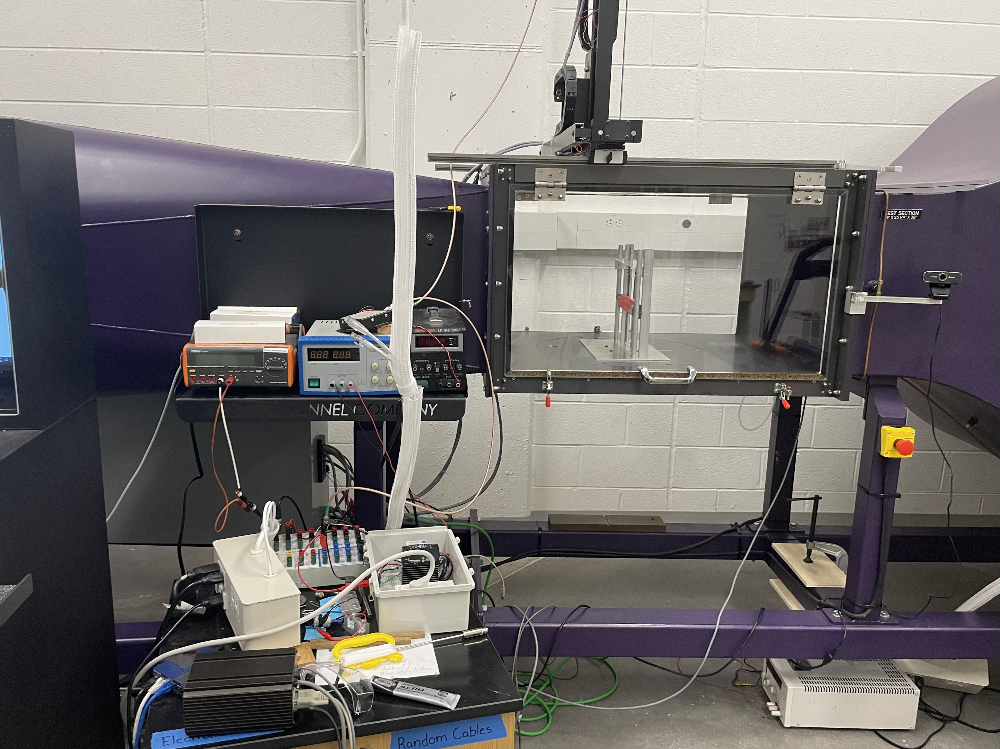
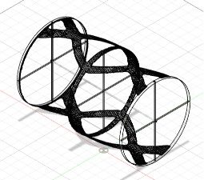
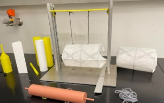
Professor Masroor's research in flow-induced vibrations explores the
potential to harvest energy from vibrations that are induced by
vortices shed from a body in fluid flow. I primarily worked on
building the first iteration of an apparatus that could allow us to
explore different bodies in Swarthmore's wind tunnel. I also
designed more than 10 bodies for us to test and discussed how we
might convert the vibrations to electrical energy. More information
about what I did is provided
here.
Tools & Machines Used
- CAD & 3D Printer
- Band Saw
- Drills and Taps
- Belt Sander
Materials Used
- PLA
- Aluminum
- Copper Tubing
- Epoxy
- "Aerodynamic" Tape
Worked With
- Professor Emad Masroor
- J. Johnson, Swarthmore Engineering Machinist
- Vansh Garg '26
- Dylan Jacobs '27
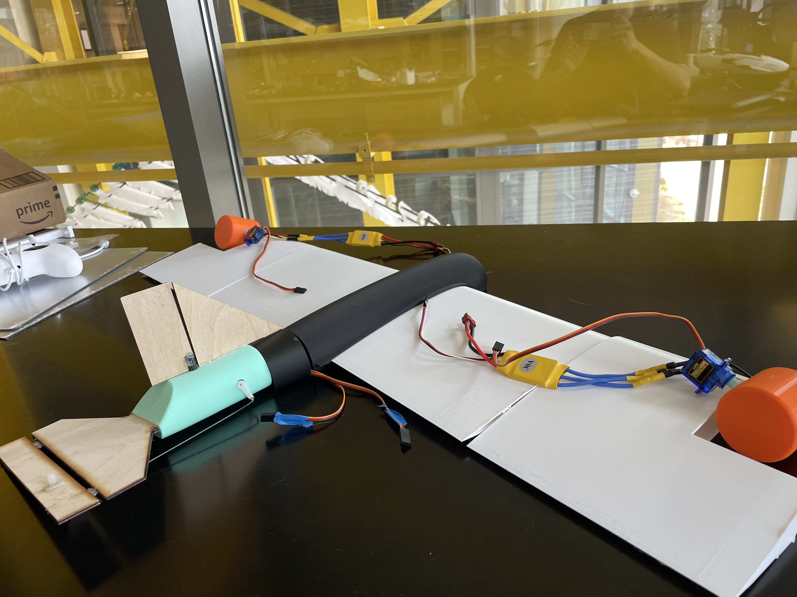
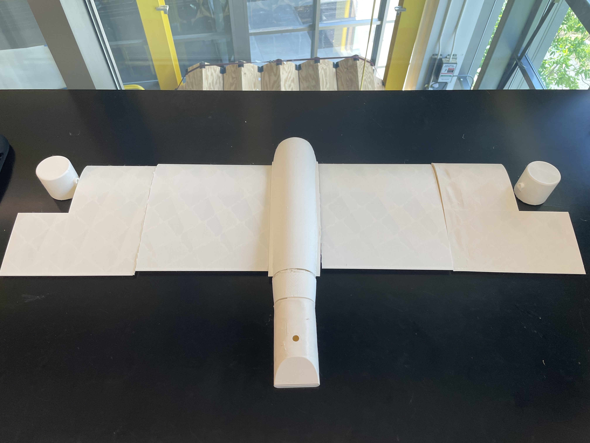
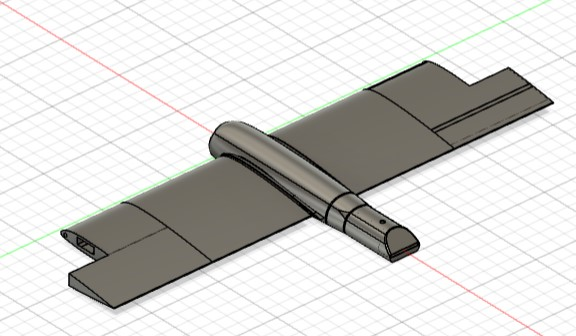

I developed multiple iterations of a custom designed drone from
scratch that uses two propellors as well as a rudder and an
elevator. The main goals of the project were to learn more CAD
skills, do some basic electronics, and make something relatively
cool, so the logistics and control theory have not been entirely
flushed out. The above picture on the right shows an attempt to fly
a consumer kit drone. I may need to work on my drone piloting skills
before testing my design in the air as well. Improvements include
developing a PID flight controller and adding wheels for take off
and landing.
Tools & Machines Used
- CAD & 3D Printer
- Hand Tools
- Laser Cutter
Materials Used
- Light Weight PLA & PLA
- Carbon Fiber Tubes
- Electronics
Worked With
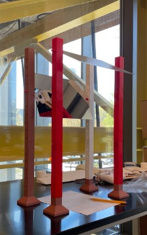
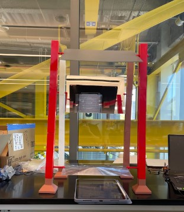
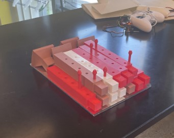
This device is meant to provide an easy way for users to do various
desk activities in a more ergonomic position, preventing future
health problems such as neck and back pain. The above pictures show
a working prototype. More information about a previous design and
further improvements
here.
Tools & Machines Used
- CAD & 3D Printer
- Table Saw
- Manual Mill
Materials Used
- PLA
- Mirrors
- Lens
- Spare Aluminum
- Threaded 10-32 Rods
Worked With
- J. Johnson, Swarthmore Engineering Machinist
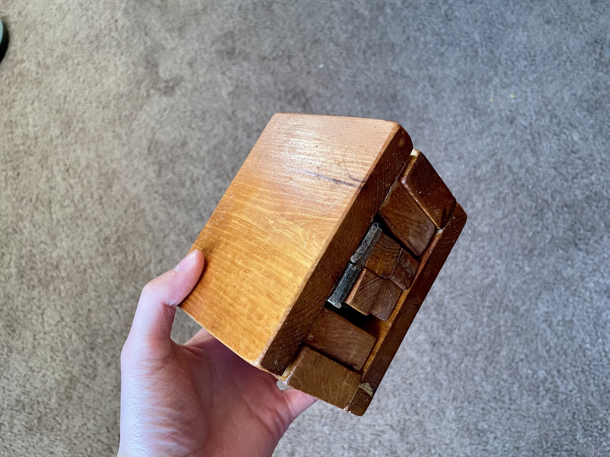
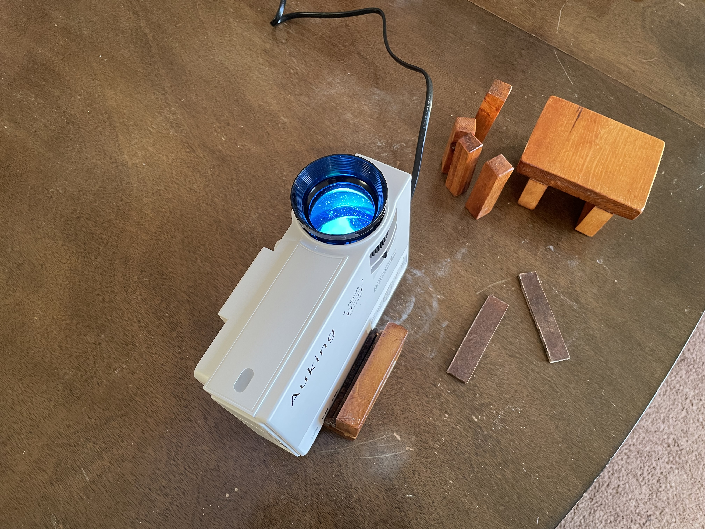
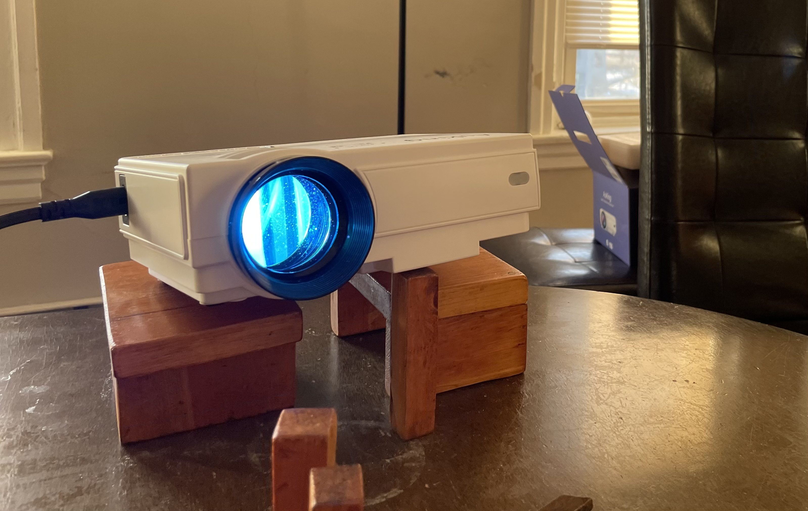
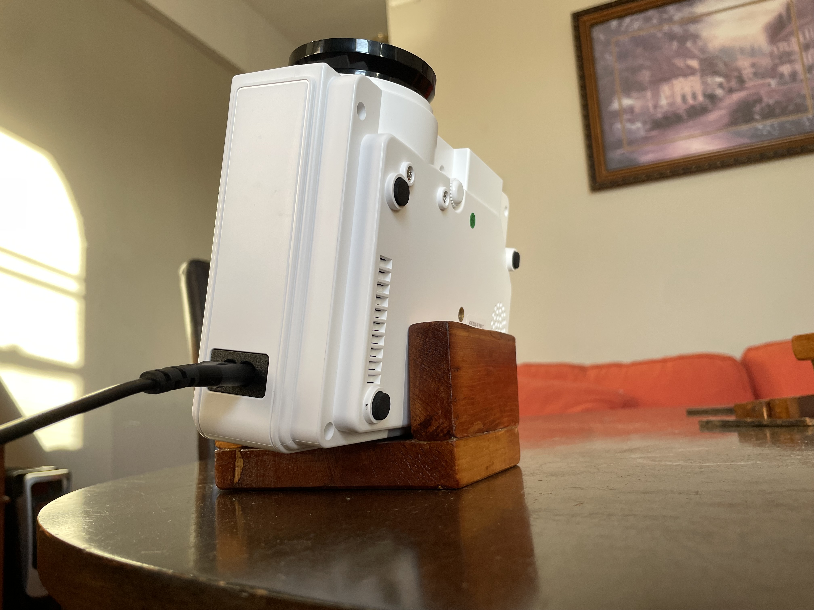
A mount for a small projector that supports projection vertically or
horizontally and allows angle adjustments in both directions using
additional pieces. Designed multiple 3D Printed models involving
ratchets, scissor mechanisms, and (relatively) complex mechanical
systems but decided a simple wooden solution could look more
aethestic and function well. Stores compactly. A gift for a friend.
Tools & Machines Used
- Jig Saw
- Palm Sander
- CAD & 3D Printer
- Various Handheld Saws and Tools
Materials Used
- Scrap Wood
- Wood Glue
- Water-based Stain
- Polyurethane

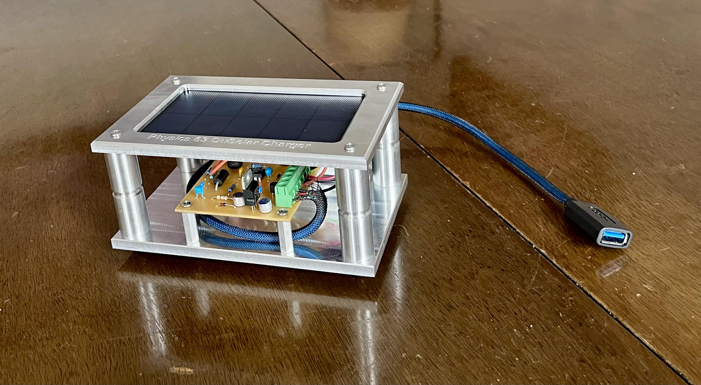
Solar panel stores energy in a rechargeable battery which can then
output the energy through a USB cable of choice when desired. Main
project for Physics 63, a shop class.
Tools & Machines Used
- CNC Mill & CAD/CAM
- Lathe
- Manual Mill
- Soldering Iron
- Circuit Design & PCB Mini Mill
Materials Used
- Various Stock
- Various Electronic Parts
Worked With
- Paul Jacobs, Swarthmore Physics Electronics & Computers
- Steve Palmer, Swarthmore Physics Machine Shop Supervisor
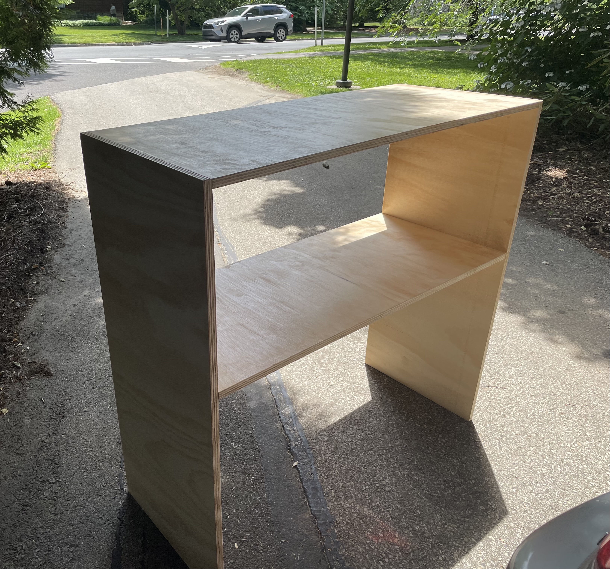
Needed a trash can, a storage rack, bed spacers, and some
decorations for my apartment. This was (not) the easiest way to
obtain them, but it was generally fun and free.
Tools & Machines Used
- MIG Welder
- Band Saw
- Sheet Metal Brake
- Belt Sander
- Angle Grinder
- Table Saw
Materials Used
-
Metal from a scrapped Swarthmore Engineering department cart
- Plywood
Worked With
- J. Johnson, Swarthmore Engineering Machinist
- Josh Jordan, Makerspace